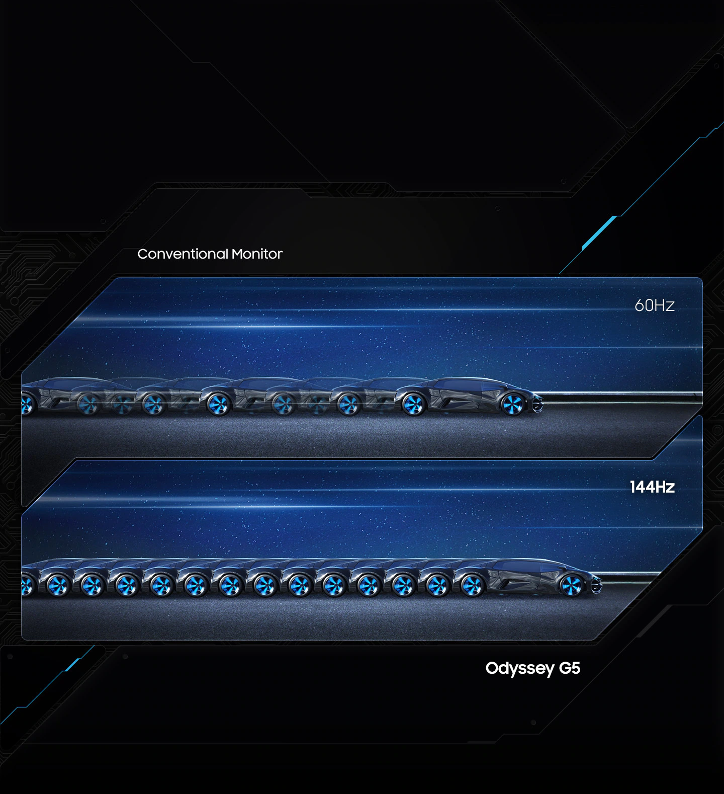
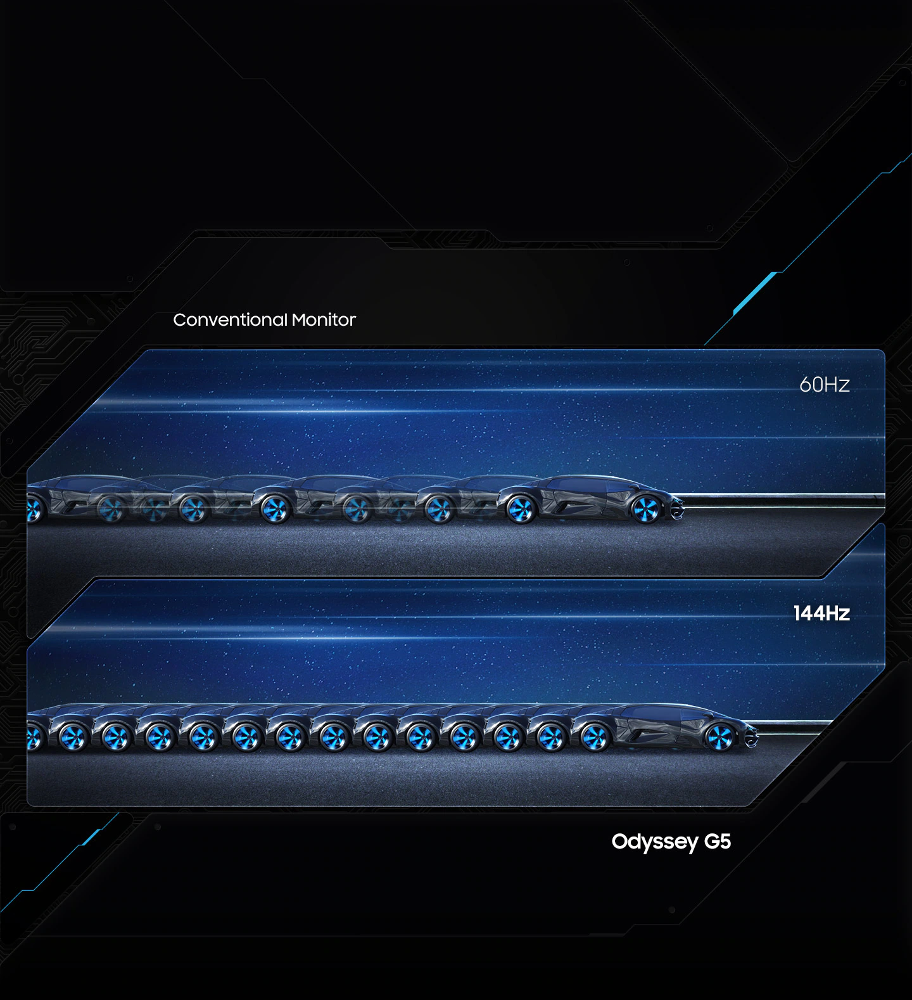

Dincolo de posibil
Scenele live te înconjoară. Ecranul curbat 1000R vă umple vederea periferică și vă permite să vedeți pe ecran cele mai mici detalii despre aspectul și acțiunile eroului. Experimentați nivelul de joc atunci când experimentați o unitate pe care nu ați experimentat-o până acum.
Ecran WQHD strălucitor
Lumea ta de joc pare acum extraordinar de reală. Monitorul de jocuri WQHD are 1,7x rezoluția Full HD pentru detalii și claritate excepționale. Veți aprecia calitatea superbă a imaginii și câmpul vizual larg, facilitând percepția acțiunii pe ecran.
Rata de reîmprospătare 144 Hz
Deveniți câștigătorul tuturor inamicilor în cele mai dinamice bătălii. Rata de reîmprospătare de 144Hz elimină complet întârzierea și neclaritatea mișcării, făcând sesiunea de joc excepțional de lină în cele mai pline de acțiune scene.
 

Timp de răspuns 1 ms
Cea mai mică acțiune este realizată pe ecran în 1 milisecundă. Aruncă asupra inamicului imediat ce îl vezi și fii primul, mereu și peste tot, datorită preciziei ridicate a poziționării cursorului mouse-ului. Acțiunile pe ecran sunt la fel de rapide ca reacția la ceea ce se întâmplă.
Netezime excepțională a sesiunii de jocuri. Tehnologia AMD FreeSync Premium este o tehnologie de sincronizare adaptivă care reduce jitter-ul, decolorarea imaginii și întârzierea de intrare. Compensarea redusă a cadrelor asigură faptul că fiecare scenă este excepțional de netedă.
HDR realist
Grafică uimitor de uimitoare datorită suportului HDR10. Un adevărat caleidoscop de nuanțe de culoare dă viață scenelor jocului ca niciodată. Cu detalii excelente în cele mai întunecate și mai deschise scene și rezoluții de ecran ridicate, puteți detecta cu ușurință dușmanii ascunși.